Naturaleza, Fauna y Flora de Boyacá
Conoce la gran cantidad de entes vivos en nuestro departamento.
Reservas y parques naturales
Parque Nacional Natural El Cocuy
Ubicado en el norte de Boyacá, el Parque Nacional Natural El Cocuy es
uno de los lugares naturales más importantes del departamento. Se
caracteriza por sus montañas, nevados, lagunas y paisajes de páramo.
Es un destino ideal para realizar senderismo y conocer de cerca los
ecosistemas de alta montaña.

Páramo de Ocetá
El Páramo de Ocetá, ubicado cerca del municipio de Monguí, es
considerado uno de los páramos más hermosos de Colombia. Sus paisajes
están formados por montañas, frailejones, lagunas y formaciones
rocosas. Es un lugar perfecto para realizar caminatas y disfrutar de
la naturaleza.
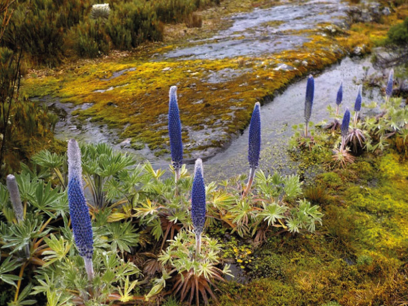
Laguna de Tota
La Laguna de Tota es uno de los principales atractivos naturales de
Boyacá y uno de los cuerpos de agua más importantes de Colombia. Se
encuentra rodeada de montañas y ofrece paisajes ideales para
descansar, tomar fotografías y disfrutar de actividades relacionadas
con el turismo de naturaleza.
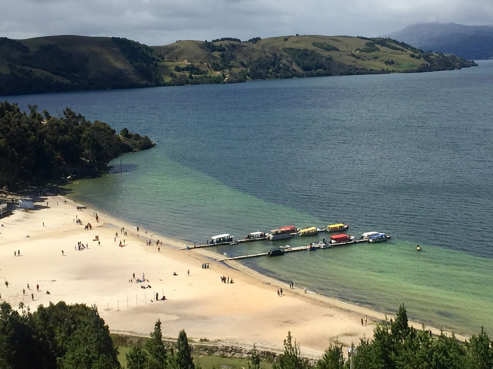
Parque Natural Regional Serranía de las Quinchas
La Serranía de las Quinchas es una zona de gran importancia ambiental
ubicada en el occidente de Boyacá. Sus bosques albergan una gran
variedad de plantas y animales. Es especialmente importante para la
conservación de especies y ecosistemas de la región.
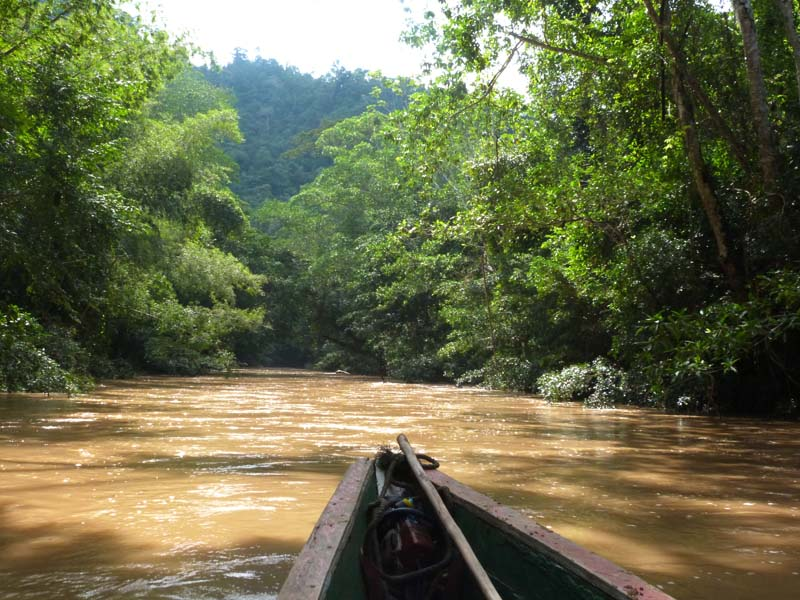
Fauna de Boyacá
Cóndor de los Andes
El cóndor de los Andes es una de las aves más representativas de las
montañas colombianas. Puede encontrarse en zonas de alta montaña y
cumple una función importante dentro de los ecosistemas. Su presencia
es un símbolo de la riqueza natural de los Andes.

Oso de anteojos
El oso de anteojos es uno de los animales más importantes de los
ecosistemas andinos. Habita principalmente en bosques y páramos y
ayuda a mantener el equilibrio natural al dispersar semillas. Es una
especie que necesita protección debido a la pérdida de su hábitat.
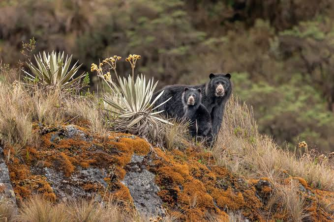
Venado de páramo
El venado de páramo habita en zonas altas de los Andes y está adaptado
a las condiciones frías de estos ecosistemas. Se alimenta
principalmente de plantas y forma parte importante de la cadena
natural de los páramos.
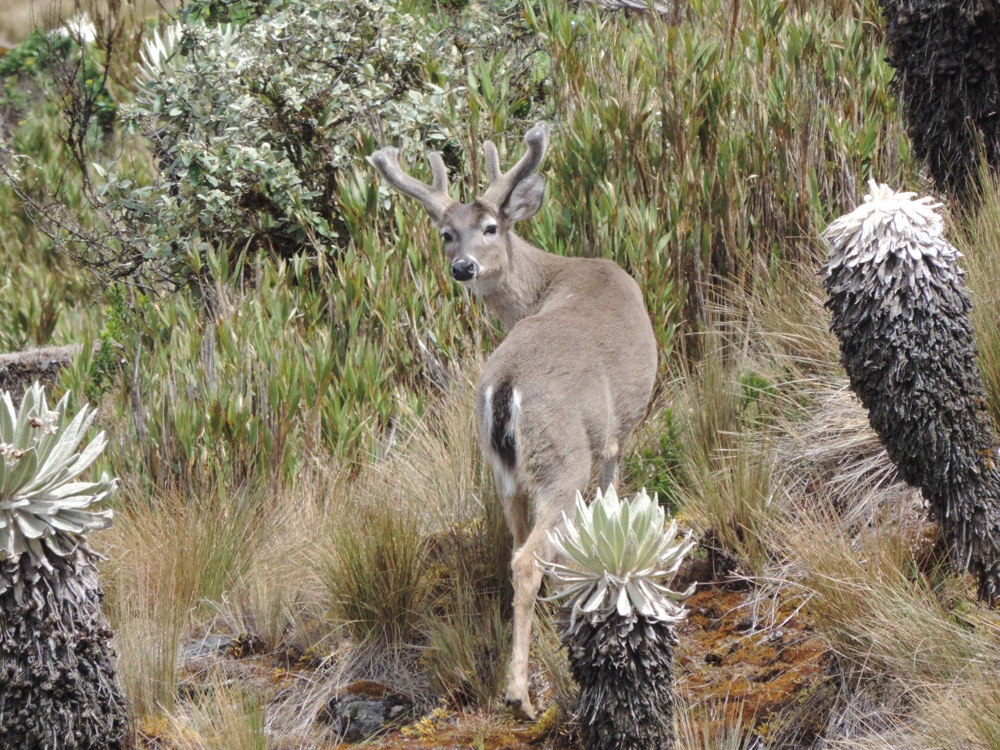
Águila de páramo
Las águilas que habitan las zonas de páramo son importantes
depredadores dentro de estos ecosistemas. Ayudan a controlar las
poblaciones de otras especies y contribuyen al equilibrio de la
naturaleza.
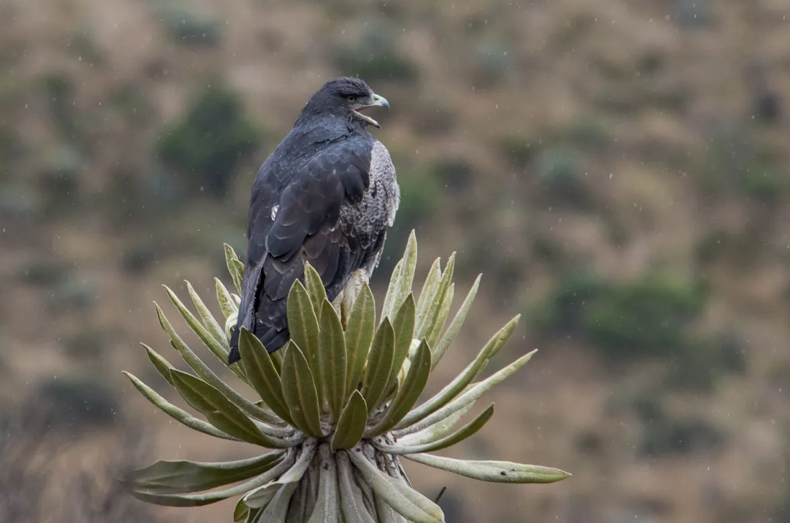
Otros animales
En los diferentes ecosistemas de Boyacá también pueden encontrarse
especies como zorros, conejos, armadillos, zarigüeyas, colibríes y una
gran variedad de aves, reptiles y pequeños mamíferos.
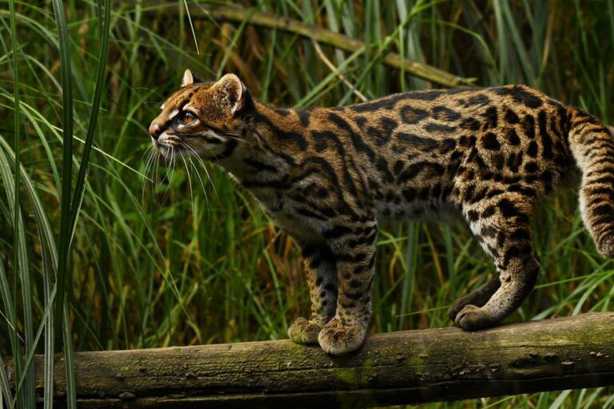
Flora de Boyacá
Frailejón
El frailejón es una de las plantas más representativas de los páramos
colombianos. Sus hojas ayudan a capturar y almacenar agua, por lo que
cumple una función fundamental en el nacimiento y conservación de las
fuentes hídricas.
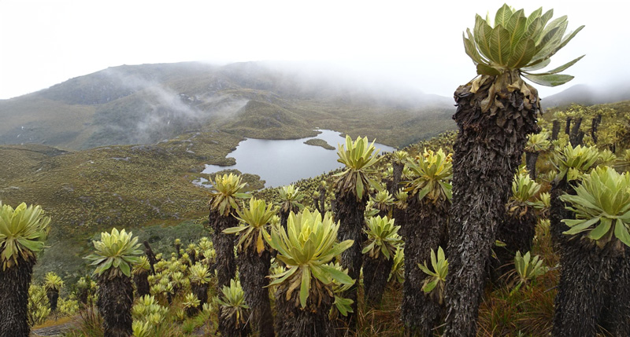
Palma de cera
La palma de cera es una de las especies de palmas más representativas
de Colombia. Puede alcanzar grandes alturas y forma parte de algunos
paisajes de las zonas montañosas. Además, proporciona alimento y
refugio para diferentes especies de animales.
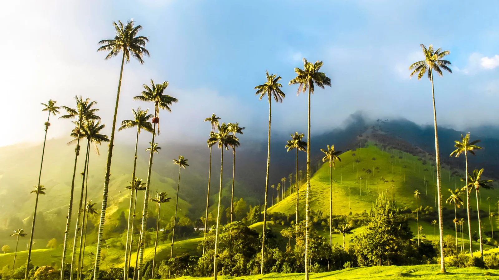
Musgos
Los musgos son pequeños organismos que cumplen una función muy
importante en los ecosistemas de páramo y bosque. Ayudan a conservar
la humedad y contribuyen a la retención del agua en el suelo.
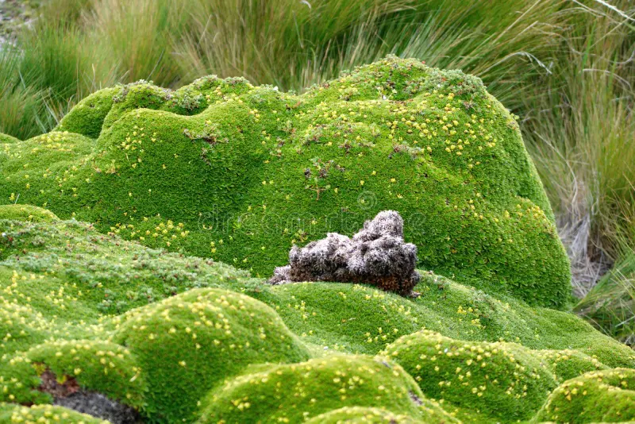
Orquídeas
Las orquídeas forman parte de la gran diversidad de plantas que se
encuentran en los bosques y montañas de Boyacá. Existen diferentes
especies y sus flores destacan por sus formas y colores.
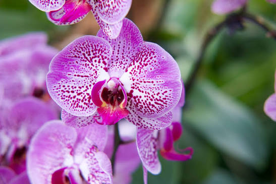
Vegetación de páramo
Los páramos de Boyacá cuentan con una gran variedad de plantas
adaptadas a las bajas temperaturas, los fuertes vientos y las
condiciones de alta montaña. Esta vegetación ayuda a proteger el suelo
y conservar el agua.
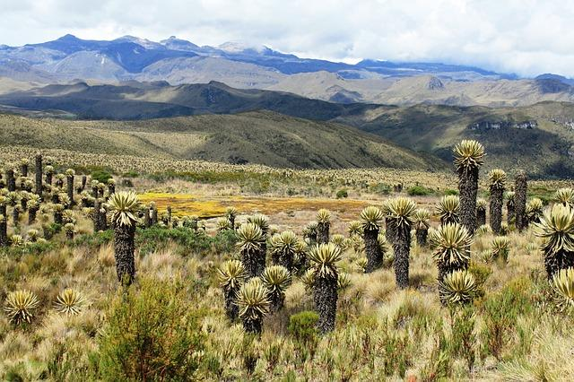